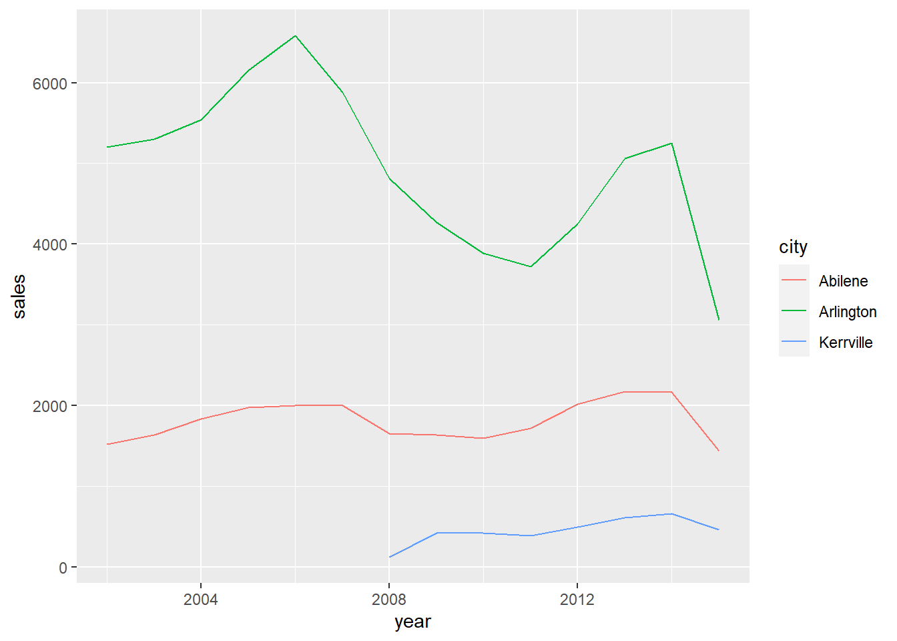

Run SQL from RStudio
If you are an R user, consider running SQL on your database directly from RStudio. By moving some of your heaviest data wrangling from R code to SQL you can use the greater speeed of the database while still staying in RStudio with all your code in one place.
To connect RStudio to Oracle use the new oracleConnectR R package. To connect all other database types to RStudio, follow the RStudio connect to a database guidance.
Write SQL in RStudio and execute in the database
To demonstrate how to run SQL on your database from RStudio, we first create a temporary in-memory database using the RSQLite package. We then write the demonstration Texas Housing Sales data from the ggplot package into that temproary database.
library(tidyverse)
library(RSQLite)
library(DBI)
# Create an ephemeral in-memory RSQLite database
con <- DBI::dbConnect(RSQLite::SQLite(), dbname = ":memory:")
DBI::dbWriteTable(con, "txhousing",
ggplot2::txhousing,
overwrite = TRUE)Here, using the DBI pckage, we send a SQL query to the database ready to be executed.
query <- DBI::dbSendQuery(con,
"SELECT city,
year,
sum(sales) as sales
FROM txhousing
WHERE year >=2002
GROUP BY city,
year
HAVING city IN ('Abilene','Arlington','Kerrville')
ORDER BY city,
year;")Finally, using DBI::dbFetch() we execute the SQL and pull the data from the database into a dataframe called texas_df.
texas_df <- DBI::dbFetch(query)
DBI::dbClearResult(query)
head(texas_df)## city year sales
## 1 Abilene 2002 1516
## 2 Abilene 2003 1632
## 3 Abilene 2004 1830
## 4 Abilene 2005 1977
## 5 Abilene 2006 1997
## 6 Abilene 2007 2003We can now use the data frame texas_df, such as in this quick plot.
texas_df %>%
ggplot2::ggplot() +
ggplot2::aes(x = year,
y = sales,
colour = city) +
ggplot2::geom_line() 
dbplyr writes SQL for you from dplyr code
We can also use the dbplyr package to automatically create SQL code from your dplyr code.
Three good tutorials on this method are:
- data carpentry.
- A Computing for the social sciences course.
- RStudio’s Databases using dplyr.
Why use dbplyr?
But why is this useful? It may be that “You have so much data that it does not all fit into memory simultaneously and you need to use some external storage engine”.
You may also find that using the database leads to dramatic speed-up of your data wrangling if you benchmark between the two methods. A faster method will likely scale better if future applications of your work tackle greater data volumes.
How to use dbplyr
Again, we set up a temporary database and write a table to it.
con <- DBI::dbConnect(RSQLite::SQLite(), dbname = ":memory:")
DBI::dbWriteTable(con, "txhousing",
ggplot2::txhousing,
overwrite = TRUE)To use the functionality of dbplyr we use dplyr::tbl(). This tells dplyr that this table is in a database that we have set up a connection for (called con).
library(dbplyr)
tble <- dplyr::tbl(con, "txhousing")Now, when we use that table in ordinary dplyr code like this, dplyr knows it is a database table and dbplyr will translate it into SQL automatically in the background.
texas <-
tble %>%
dplyr::filter(year >= 2002) %>%
dplyr::group_by(city,year) %>%
dplyr::summarise(sales = sum(sales, na.rm = TRUE)) %>%
dplyr::filter(city %IN% c('Abilene','Arlington','Kerrville')) What is dbplyr doing for us?
Because dbplyr is “lazy”, the R object we have created (texas) has not pulled the data or executed the SQL in the database.
“When working with databases, dplyr tries to be as lazy as possible: It never pulls data into R unless you explicitly ask for it. It delays doing any work until the last possible moment: it collects together everything you want to do and then sends it to the database in one step.” From Introduction to dbplyr.
This means We can carry on adding dplyr logic. For example, below we add on a sort by city and year using dplyr::arrange(). This simply adds to the SQL logic stored in texas.
texas <- texas %>%
dplyr::arrange(city,year) We can also view the SQL dbplyr has automatically created for us from the dplyr code by piping texas into the function dplyr::collect().
texas %>% dplyr::show_query()## <SQL>
## SELECT *
## FROM (SELECT `city`, `year`, SUM(`sales`) AS `sales`
## FROM (SELECT *
## FROM `txhousing`
## WHERE (`year` >= 2002.0))
## GROUP BY `city`, `year`)
## WHERE (`city` IN ('Abilene', 'Arlington', 'Kerrville'))
## ORDER BY `city`, `year`Notice how ugly this SQL is compared to the SQL we wrote in the first section above. It creates the same result, but automatically created SQL from dbplyr is usually difficult to read. For this reason, we would only QA the dplyr code that created the SQL. It would also not be a good idea to re-use the automatically generated SQL elsewhere.
If we need to understand or de-bug our chained dplyr steps, we can use the dplyr::glimpse() or utils::head() to quickly preview the top few rows for parts of our logic.
tble %>%
dplyr::filter(year >= 2002) %>% utils::head()## # Source: lazy query [?? x 9]
## # Database: sqlite 3.30.1 [:memory:]
## city year month sales volume median listings inventory date
## <chr> <int> <int> <dbl> <dbl> <dbl> <dbl> <dbl> <dbl>
## 1 Abilene 2002 1 94 6530000 64000 652 5.4 2002
## 2 Abilene 2002 2 94 6860000 62900 746 6.3 2002.
## 3 Abilene 2002 3 107 8385000 62100 774 6.5 2002.
## 4 Abilene 2002 4 135 10465000 66900 767 6.3 2002.
## 5 Abilene 2002 5 154 11465000 69200 778 6.4 2002.
## 6 Abilene 2002 6 136 11600000 76700 758 6.3 2002.The R object texas that dbplyr has created is a nested list of instructions. We can inspect what’s inside from the Environment pane, or by using utils::str().
utils::str(texas)## List of 2
## $ src:List of 2
## ..$ con :Formal class 'SQLiteConnection' [package "RSQLite"] with 7 slots
## .. .. ..@ ptr :<externalptr>
## .. .. ..@ dbname : chr ":memory:"
## .. .. ..@ loadable.extensions: logi TRUE
## .. .. ..@ flags : int 70
## .. .. ..@ vfs : chr ""
## .. .. ..@ ref :<environment: 0x000001aba3494428>
## .. .. ..@ bigint : chr "integer64"
## ..$ disco: NULL
## ..- attr(*, "class")= chr [1:4] "src_SQLiteConnection" "src_dbi" "src_sql" "src"
## $ ops:List of 4
## ..$ name: chr "arrange"
## ..$ x :List of 4
## .. ..$ name: chr "filter"
## .. ..$ x :List of 4
## .. .. ..$ name: chr "summarise"
## .. .. ..$ x :List of 4
## .. .. .. ..$ name: chr "group_by"
## .. .. .. ..$ x :List of 4
## .. .. .. .. ..$ name: chr "filter"
## .. .. .. .. ..$ x :List of 2
## .. .. .. .. .. ..$ x : 'ident' chr "txhousing"
## .. .. .. .. .. ..$ vars: chr [1:9] "city" "year" "month" "sales" ...
## .. .. .. .. .. ..- attr(*, "class")= chr [1:3] "op_base_remote" "op_base" "op"
## .. .. .. .. ..$ dots:List of 1
## .. .. .. .. .. ..$ : language ~year >= 2002
## .. .. .. .. .. .. ..- attr(*, ".Environment")=<environment: 0x000001ab9f8ac488>
## .. .. .. .. ..$ args: list()
## .. .. .. .. ..- attr(*, "class")= chr [1:3] "op_filter" "op_single" "op"
## .. .. .. ..$ dots:List of 2
## .. .. .. .. ..$ city: symbol city
## .. .. .. .. ..$ year: symbol year
## .. .. .. ..$ args:List of 1
## .. .. .. .. ..$ add: logi FALSE
## .. .. .. ..- attr(*, "class")= chr [1:3] "op_group_by" "op_single" "op"
## .. .. ..$ dots:List of 1
## .. .. .. ..$ sales: language ~sum(sales, na.rm = TRUE)
## .. .. .. .. ..- attr(*, ".Environment")=<environment: 0x000001aba3035a48>
## .. .. ..$ args: list()
## .. .. ..- attr(*, "class")= chr [1:3] "op_summarise" "op_single" "op"
## .. ..$ dots:List of 1
## .. .. ..$ : language ~city %IN% c("Abilene", "Arlington", "Kerrville")
## .. .. .. ..- attr(*, ".Environment")=<environment: 0x000001ab9ee02998>
## .. ..$ args: list()
## .. ..- attr(*, "class")= chr [1:3] "op_filter" "op_single" "op"
## ..$ dots:List of 2
## .. ..$ : language ~city
## .. .. ..- attr(*, ".Environment")=<environment: 0x000001aba316f238>
## .. ..$ : language ~year
## .. .. ..- attr(*, ".Environment")=<environment: 0x000001aba316f238>
## ..$ args:List of 1
## .. ..$ .by_group: logi FALSE
## ..- attr(*, "class")= chr [1:3] "op_arrange" "op_single" "op"
## - attr(*, "class")= chr [1:5] "tbl_SQLiteConnection" "tbl_dbi" "tbl_sql" "tbl_lazy" ...Execute the SQL dbplyr has created for us
Finally, when we want to use the R object texas such as in a plot, dbplyr realises we need the data inside R to create it. The SQL is executed on the database and the data is pulled into RStudio. Note this plot is the same plot as from the previous method above where we wrote our own SQL.
texas %>%
ggplot2::ggplot() +
ggplot2::aes(x = year,
y = sales,
colour = city) +
ggplot2::geom_line() 
We could also tell dbplyr to execute the SQL and pull the data into an R dataframe using dplyr::collect(). For example, to carry out further data manipulation within RStudio.
texas_df <- dplyr::collect(texas)
head(texas_df)## # A tibble: 6 x 3
## # Groups: city [1]
## city year sales
## <chr> <int> <dbl>
## 1 Abilene 2002 1516
## 2 Abilene 2003 1632
## 3 Abilene 2004 1830
## 4 Abilene 2005 1977
## 5 Abilene 2006 1997
## 6 Abilene 2007 2003What if a dplyr verb won’t convert to SQL?
Some dplyr verbs have no direct equivalent in SQL and will return an error. For example, below we try to use dplyr::slice() to select the highest number of sales for each city in any month. This returns an error when run on the tble that is a table in our database.
tble %>%
dplyr::group_by(city) %>%
dplyr::arrange(desc(sales)) %>%
dplyr::slice(1)## Error in UseMethod("slice_"): no applicable method for 'slice_' applied to an object of class "c('tbl_SQLiteConnection', 'tbl_dbi', 'tbl_sql', 'tbl_lazy', 'tbl')"dplyr::slice() will only work if we bring the data into R using dplyr::collect() as shown below. However, we have had to pull all of our data into R. If this is a very large table this may not fit into R, or it could greatly slow down our data wrangling.
tble %>%
dplyr::collect() %>%
dplyr::group_by(city) %>%
dplyr::arrange(desc(sales)) %>%
dplyr::slice(1) %>%
dplyr::select(city,year,month,sales) %>% head()## # A tibble: 6 x 4
## # Groups: city [6]
## city year month sales
## <chr> <int> <int> <dbl>
## 1 Abilene 2015 7 268
## 2 Amarillo 2011 8 390
## 3 Arlington 2006 6 720
## 4 Austin 2015 7 3466
## 5 Bay Area 2015 7 849
## 6 Beaumont 2015 7 318An alternative is to use a combination of dplyr verbs that will convert to SQL achieve the same result. Or, as below, we write the SQL ourselves for this particular task. We use a Common Table Expression that is explained further in our guide here.
query <- DBI::dbSendQuery(con, "
WITH cte AS (
SELECT city,
year,
month,
sales,
row_number() OVER(PARTITION BY city ORDER BY sales DESC) AS rownum
FROM txhousing
)
SELECT *
FROM cte
WHERE rownum = 1;")
DBI::dbFetch(query, n = 6)## city year month sales rownum
## 1 Abilene 2015 7 268 1
## 2 Amarillo 2011 8 390 1
## 3 Arlington 2006 6 720 1
## 4 Austin 2015 7 3466 1
## 5 Bay Area 2015 7 849 1
## 6 Beaumont 2015 7 318 1DBI::dbClearResult(query)